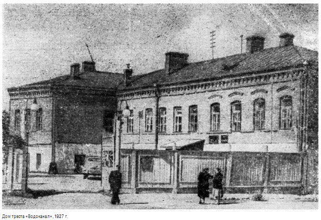

История предприятия
История предприятия насчитывает более 87 лет. За эти годы из небольшой фабрики по производству игрушек выросло в крупное машиностроительное объединение холдингового типа, которое включает в себя 3 структурных подразделения без образования юридического лица, 11 дочерних хозяйственных обществ и 2 унитарных предприятия – юридических лиц.
Сегодня модельный ряд холдинга «АМКОДОР» насчитывает более 90 моделей и модификаций техники , востребованных во многих странах мира.
Продукция общества успешно выдерживает конкуренцию с зарубежными аналогами по качеству, производительности и значительно привлекательнее по цене, стоимости запасных частей и сервисного обслуживания. Однако современным достижениям предприятия предшествовал длинный путь.
Датой основания ОАО "АМКОДОР" - управляющая компания холдинга" считается 1 февраля 1927 года, когда приказом Минского окружного объединения трудколлективов был создан трудовой коллектив по изготовлению детских игрушек, впоследствии переименованный в фабрику игрушек «Возрождение». Здесь производили детские санки, коляски и велосипеды, бидоны и чайники, плетеную мебель и гипсовые барельефы.
В сентябре 1930 года по инициативе рабочего коллектива фабрика «Возрождение» была переименована в завод «Ударник».
В годы Великой Отечественной войны завод не раз подвергался бомбежкам и был практически полностью разрушен.
Работа по восстановлению производства началась в первые же недели после освобождения Минска от немецко-фашистских захватчиков. На чудом сохранившихся станках, извлеченных из-под обломков цехов, изготавливали чугунные болванки, оконную и дверную фурнитуру, сковороды и оцинкованные ведра. Строительство новых корпусов «Ударника» началось только в 1949 году.
В апреле 1951 года завод был передан в ведение Министерства дорожного и строительного машиностроения СССР, после чего «Ударник» приступил к производству дорожных и землеройных машин. Завод активно начал осваивать новую продукцию, и уже в мае 1951 г. была выпущена первая землеройная машина КМ-800. Позже был налажен серийный выпуск многоковшовых гусеничных погрузчиков, лесных канавокопателей, многоковшовых автопогрузчиков на пневматическом ходу, шнекороторных снегоочистителей, снегопогрузчиков и др.
Первый погрузчик на собственном шасси с шарнирно-сочлененной рамой появился в 1970 году. Это был знаменитый ТО-18, прообраз сегодняшних погрузчиков АМКОДОР 332 и АМКОДОР 333. Машина, которую в народе ласково прозвали «ТО-шкой» отличалась маневренностью, надежностью и удобством в эксплуатации.
Появление одноковшовых колесных погрузчиков сыграло важную роль в механизации строительных и дорожных работ, а также коммунального хозяйства нашей страны. Новинка понравилась потребителям и снискала себе добрую славу. Погрузчику ТО-18 был присвоен Государственный Знак качества, а в 1975 г. машина была отмечена Золотой медалью ВДНХ и Дипломом I степени выставки.
В апреле 1991 года путем преобразования Минского научно-производственного объединения дорожного машиностроения по совместному решению Министерства тяжелого машиностроения СССР и Минского научно-производственного объединения дорожного машиностроения на базе завода «Ударник» было создано ОАО «Амкодор».
Сегодня в составе ОАО три структурных подразделения без образования юридического лица - заводы «Ударник»,«Дормаш», «Дормашмет», 11 дочерних хозяйственных обществ и 2 унитарных предприятия - юридических лиц:ЗАО «Амкодор-Уникаб», ЗАО «Амкодор-Пинск», ОАО «Амкодор-Унимод», ОАО «Амкодор-Белвар», ЗАО «Амкодор-Спецсервис», ООО «Амкодор-Можа», ОАО «Амкодор-Дзержинск», ЗАО «Амкодор-Шклов», ЗАО «Амкодор-Лит», ООО «Амкодор-Брянск», ТОО «Амкодор-Астана», унитарное предприятие «Амкодор-Логойск» и УП «Амкодор-Торг».
В 2012-2013г.г. дочерними предприятиями холдинга "АМКОДОР" стали: ИП ООО «AMKODOR-TASHKENT», ООО «АМКОДОР Дизайн-центр», ООО «AMKODOR-BAKU», ОАО «Кохановский экскаваторный завод», ПРУП "Дзержинский опытный механический завод".
Благодаря непрерывному творческому применению накопленного многолетнего опыта в конструировании и производстве уже в сегодняшних проектах ОАО "АМКОДОР" - управляющая компания холдинга" представлена техника завтрашнего дня. Общество постоянно проводит модернизацию всего семейства своих машин с учетом новейших требований XXI века. Ставка сделана на многофункциональность машин, современный дизайн и комфорт для оператора. Для того чтобы продукция предприятия оставалась конкурентоспособной и могла соперничать с ведущими мировыми брендами, серьезное внимание уделяется качеству, улучшению сервисного и гарантийного обслуживания. Для этого у холдинга есть все – современное оборудование, технологии и квалифицированный персонал.